Una buena gráfica permite ver en segundos lo que en una tabla de números tardaríamos mucho en descubrir: tendencias, relaciones, valores atípicos o el comportamiento de una función.
En este capítulo y en el siguiente usaremos dos bibliotecas:
Matplotlib
Plotly
Tipo de gráfica
Estática (imagen).
Interactiva (zoom, desplazamiento, información al pasar el ratón).
Ideal para
Artículos, tesis, reportes en PDF.
Páginas web, exploración de datos, presentaciones.
Formato de salida
PNG, PDF, SVG.
HTML.
Estilo de código
Se construye paso a paso (ejes, líneas, etiquetas).
Una función crea la gráfica completa.
En este capítulo aprenderemos a construir gráficas con Matplotlib, una gráfica por figura. En el siguiente, Varias gráficas en una figura y gráficas interactivas con Plotly, reuniremos varias gráficas en una sola figura y haremos gráficas interactivas con Plotly.
65.1 Antes de empezar
Este capítulo y el siguiente usan cinco bibliotecas: numpy, pandas, matplotlib, plotly y sympy. Si seguiste el capítulo Configuraciones para usar Quarto con Python, ya están instaladas en tu entorno quarto-python. Primero comprueba que RStudio las encuentra y, solo si falta alguna, instálala.
Nota
En Google Colab y en los editores interactivos de esta página las bibliotecas ya están disponibles: puedes saltar directamente a Importar las bibliotecas.
65.1.1 Paso 1. Comprobar si ya están instaladas
En la pestaña Console de RStudio (indicador >):
Código
library(reticulate)py_config() # La línea python: debe mostrar .../.venvs/quarto-python/...py_module_available("numpy") # TRUEpy_module_available("pandas") # TRUEpy_module_available("matplotlib") # TRUEpy_module_available("plotly") # TRUEpy_module_available("sympy") # TRUE
# 1. Activar el entorno (debe aparecer (quarto-python) al inicio de la línea)source ~/.venvs/quarto-python/bin/activate# 2. Instalar los paquetes del capítulopython-m pip install numpy pandas matplotlib plotly sympy# 3. Comprobar la instalaciónpython-c"import numpy, pandas, matplotlib, plotly, sympy; print('Todo correcto')"
# 1. Activar el entorno (debe aparecer (quarto-python) al inicio de la línea)source ~/.venvs/quarto-python/Scripts/activate# 2. Instalar los paquetes del capítulopython-m pip install numpy pandas matplotlib plotly sympy# 3. Comprobar la instalaciónpython-c"import numpy, pandas, matplotlib, plotly, sympy; print('Todo correcto')"
Al final de la instalación debe aparecer Successfully installed ... (o Requirement already satisfied si ya estaban), y la comprobación debe imprimir Todo correcto.
Opción B. Desde la Console de R (con reticulate)
Sin salir de R, reticulate puede instalar los paquetes en el entorno por ti:
Código
library(reticulate)# Instalar los paquetes en el entorno quarto-pythonvirtualenv_install(envname =path.expand("~/.venvs/quarto-python"),packages =c("numpy", "pandas", "matplotlib", "plotly", "sympy"))# Comprobarpy_module_available("matplotlib") # TRUEpy_module_available("plotly") # TRUE
Importante
Escribe los comandos de Bash (source, python -m pip) en la Terminal, y los de R (library(), virtualenv_install()) en la Console. Es el error más común.
Los paquetes se instalan una sola vez: quedan guardados en el entorno y no necesitas reinstalarlos cada vez que abras RStudio.
Si después de instalar sigue apareciendo ModuleNotFoundError: No module named 'matplotlib', ve a Session > Restart R y vuelve a intentarlo. Si el error continúa, consulta la solución de problemas.
65.1.3 Importar las bibliotecas
Por convención, al inicio de cada documento o notebook se importan así:
Código
import numpy as npimport matplotlib.pyplot as plt
65.2 Partes de una gráfica en Matplotlib
Antes de dibujar, conviene conocer cómo está construida una gráfica. Cada elemento que ves (título, ejes, líneas, leyenda…) es una pieza que podemos agregar y personalizar por separado:
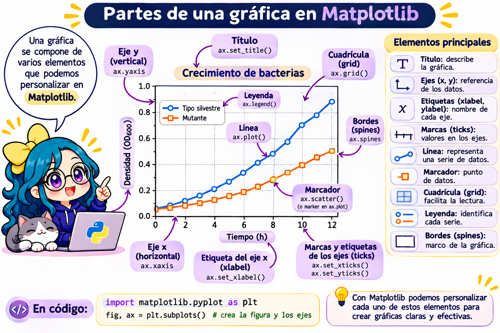
65.2.1 Una gráfica se construye por capas
Matplotlib trabaja como si dibujáramos sobre hojas transparentes encimadas: cada instrucción agrega una capa encima de las anteriores, y al final plt.show() muestra el resultado completo.
La figura (Figure): el lienzo completo, la “hoja” donde va todo. Define el tamaño.
Los ejes (Axes): el área de la gráfica dentro de la figura, con su eje \(x\), su eje \(y\), sus marcas y sus bordes. Una figura puede tener varios ejes (lo veremos en subplots()).
Los datos: líneas (plot), puntos (scatter), barras (bar), etc., dibujados dentro de los ejes.
Los textos y adornos: título, etiquetas de los ejes, leyenda, cuadrícula, anotaciones.
Veamos las capas una por una con un ejemplo: ¿quién crece más rápido, \(n^2\) o \(2^n\)?
Código
n = np.arange(0, 9) # n = 0, 1, ..., 8# Capa 1: la figura (lienzo) y los ejes (área de la gráfica)fig, ax = plt.subplots(figsize=(6, 4))# Capa 2: los datos (línea + marcadores)ax.plot(n, n**2, marker="o", label="$n^2$")ax.plot(n, 2**n, marker="s", label="$2^n$")# Capa 3: los textosax.set_title("¿Quién crece más rápido?") # Títuloax.set_xlabel("n") # Etiqueta del eje xax.set_ylabel("valor") # Etiqueta del eje y# Capa 4: las marcas de los ejes (ticks)ax.set_xticks(range(0, 9)) # Una marca en cada entero# Capa 5: la cuadrículaax.grid(True, linestyle="--", alpha=0.5)# Capa 6: la leyenda (usa el label de cada línea)ax.legend()# Capa 7: los bordes (spines): quitamos el de arriba y el de la derechaax.spines["top"].set_visible(False)ax.spines["right"].set_visible(False)plt.show()
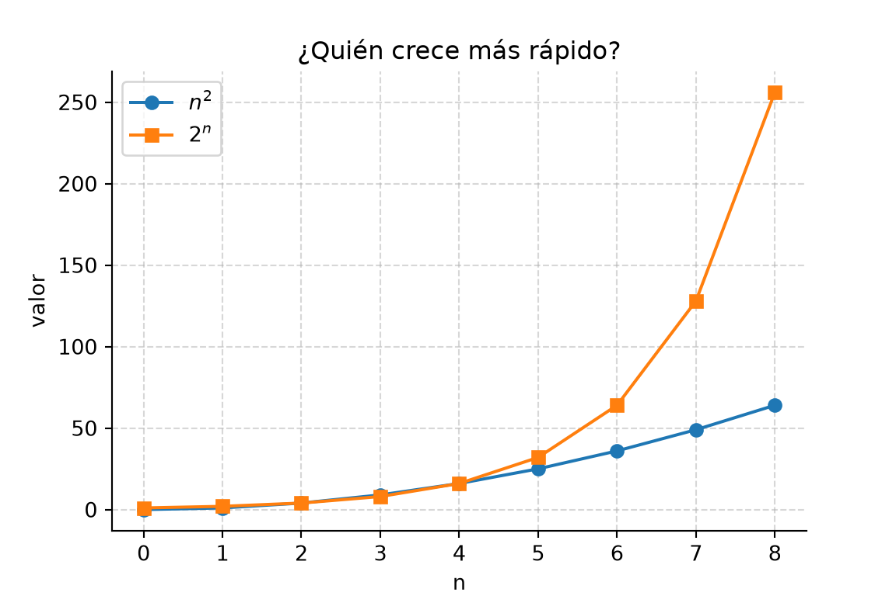
¿Ves dónde se cruzan? \(n^2 = 2^n\) en \(n = 2\) y \(n = 4\); a partir de ahí, \(2^n\) crece mucho más rápido.
NotaEl orden de las capas importa
Lo que se dibuja después queda encima. Si un punto queda tapado por una línea, puedes cambiar el orden de las instrucciones o usar el argumento zorder: entre mayor sea, más arriba se dibuja (por ejemplo, plt.scatter(..., zorder=3)).
65.2.2 Dos formas de escribir lo mismo: plt y ax
Matplotlib tiene dos estilos para construir una gráfica:
Estilo plt (pyplot): cada función actúa sobre la gráfica “actual”. Es corto y cómodo para gráficas sencillas: plt.plot(), plt.title().
Estilo ax (orientado a objetos): primero creamos la figura y los ejes con fig, ax = plt.subplots() y luego llamamos los métodos de ax: ax.plot(), ax.set_title(). Es el estilo de la imagen y el más claro cuando hay varias gráficas en una figura.
Casi todas las funciones existen en los dos estilos; la diferencia más común es que en el estilo ax los nombres empiezan con set_:
Parte de la gráfica
Estilo plt
Estilo ax
¿Qué hace?
Figura
plt.figure(figsize=(ancho, alto))
fig, ax = plt.subplots(figsize=(ancho, alto))
Crea el lienzo (tamaño en pulgadas).
Línea
plt.plot(x, y)
ax.plot(x, y)
Dibuja una línea que une los puntos.
Marcadores
plt.scatter(x, y)
ax.scatter(x, y)
Dibuja puntos sin unirlos (o usa marker="o" en plot).
Título
plt.title()
ax.set_title()
Describe qué muestra la gráfica.
Etiquetas de los ejes
plt.xlabel(), plt.ylabel()
ax.set_xlabel(), ax.set_ylabel()
Nombre (y unidades) de cada eje.
Límites de los ejes
plt.xlim(), plt.ylim()
ax.set_xlim(), ax.set_ylim()
Rango visible de cada eje.
Marcas (ticks)
plt.xticks(), plt.yticks()
ax.set_xticks(), ax.set_yticks()
Valores que aparecen sobre los ejes.
Cuadrícula
plt.grid(True)
ax.grid(True)
Líneas de referencia que facilitan la lectura.
Leyenda
plt.legend()
ax.legend()
Identifica cada serie (usa el argumento label).
Texto
plt.text(x, y, "texto")
ax.text(x, y, "texto")
Escribe un texto en la coordenada \((x, y)\).
Bordes (spines)
—
ax.spines["top"].set_visible(False)
Muestra u oculta el marco de la gráfica.
Guardar
plt.savefig("archivo.png", dpi=300)
fig.savefig("archivo.png", dpi=300)
Guarda la figura en un archivo.
Mostrar
plt.show()
plt.show()
Muestra la figura.
Tip
No mezcles los dos estilos en la misma gráfica mientras aprendes. En este capítulo usaremos el estilo plt, salvo cuando una función configure los ejes por nosotros (como plano_cartesiano(ax), en la parte de geometría analítica). En el siguiente capítulo usaremos el estilo ax para poner varias gráficas en una figura.
65.3 Coordenadas: colocar puntos en una gráfica
Antes de graficar funciones, empecemos por lo más básico del plano cartesiano: colocar un punto\((x, y)\). Toda gráfica, por complicada que sea, está hecha de puntos.
65.3.1 Un punto
Para dibujar el punto \(A(2, 3)\) usamos plt.scatter(x, y). Agregamos los ejes \(x\) y \(y\) con plt.axhline() y plt.axvline(), y una etiqueta con plt.text():
Código
plt.figure(figsize=(5, 5))plt.scatter(2, 3, color="tab:red", s=60) # Paso 1: el punto A(2, 3); s es el tamañoplt.text(2.2, 3.2, "A(2, 3)") # Paso 2: etiqueta un poco arriba a la derechaplt.axhline(0, color="black", linewidth=0.8) # Paso 3: eje x (la recta y = 0)plt.axvline(0, color="black", linewidth=0.8) # eje y (la recta x = 0)plt.xlim(-5, 5) # Paso 4: mostrar de -5 a 5 en ambos ejesplt.ylim(-5, 5)plt.grid(True)plt.xlabel("x")plt.ylabel("y")plt.title("Un punto en el plano cartesiano")plt.show()
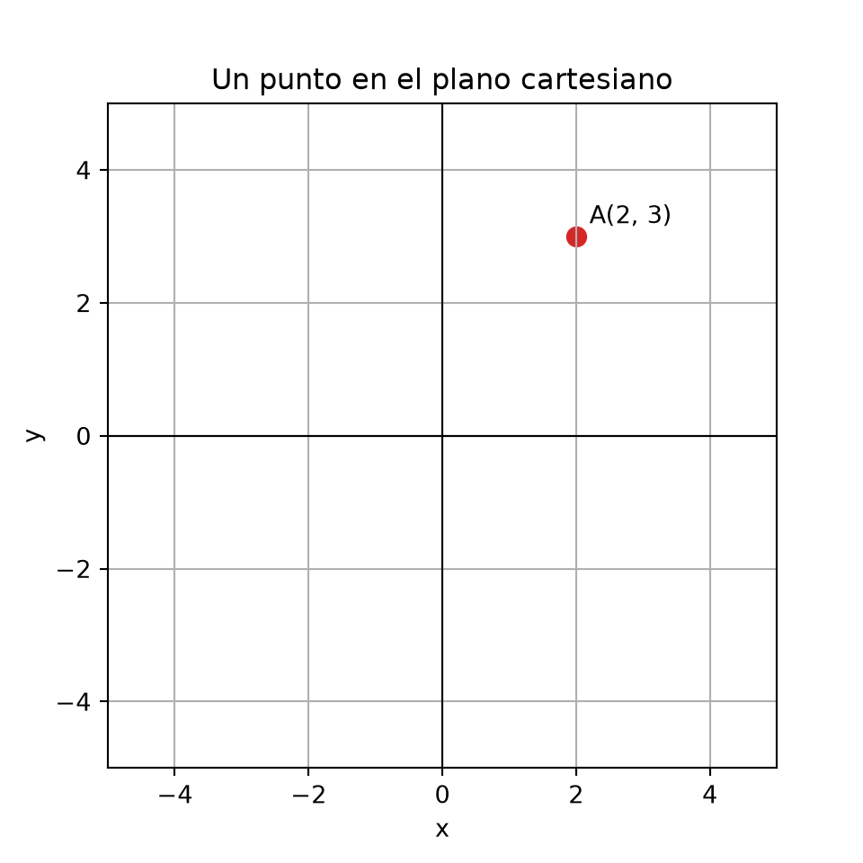
Función
¿Qué hace?
plt.scatter(x, y)
Dibuja un punto (o varios) en la coordenada \((x, y)\).
plt.text(x, y, "texto")
Escribe un texto con su esquina inferior izquierda en \((x, y)\).
plt.axhline(0)
Dibuja una recta horizontal en \(y = 0\): el eje \(x\).
plt.axvline(0)
Dibuja una recta vertical en \(x = 0\): el eje \(y\).
plt.xlim(a, b), plt.ylim(a, b)
Fijan el rango visible de cada eje.
Tip
Ponemos la etiqueta en (2.2, 3.2) y no en (2, 3) para que el texto no tape el punto.
65.3.2 Varios puntos
plt.scatter()no recibe parejas \((x, y)\), sino dos listas: una con todas las coordenadas \(x\) y otra con todas las coordenadas \(y\). El primer punto es (xs[0], ys[0]), el segundo (xs[1], ys[1]), y así sucesivamente.
Coloquemos un punto en cada cuadrante:
Código
nombres = ["A", "B", "C", "D"]xs = [2, -3, -1, 4] # Coordenadas x de A, B, C, Dys = [3, 1, -4, -2] # Coordenadas y de A, B, C, Dplt.figure(figsize=(5, 5))plt.scatter(xs, ys, color="tab:blue", s=60)# Etiquetar cada punto: zip() recorre las tres listas en paralelofor nombre, x, y inzip(nombres, xs, ys): plt.text(x +0.2, y +0.2, nombre +"("+str(x) +", "+str(y) +")")plt.axhline(0, color="black", linewidth=0.8)plt.axvline(0, color="black", linewidth=0.8)plt.xlim(-5, 5)plt.ylim(-5, 5)plt.grid(True)plt.xlabel("x")plt.ylabel("y")plt.title("Un punto en cada cuadrante")plt.show()
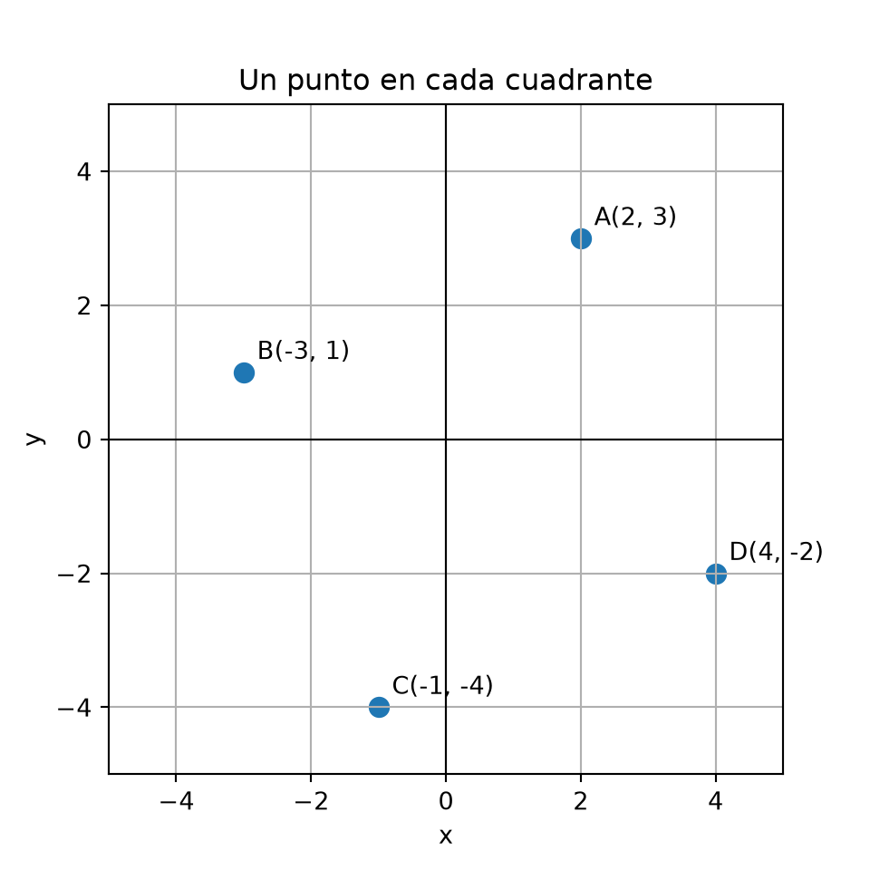
65.3.3 Un ejercicio de Geometría Analítica, ahora en Python
Con puntos, segmentos y flechas ya podemos resolver un ejercicio de un examen de Geometría Analítica. En papel se resuelve en dos pasos: hacer las operaciones y dibujar los vectores en la cuadrícula. Hagamos lo mismo con Python.
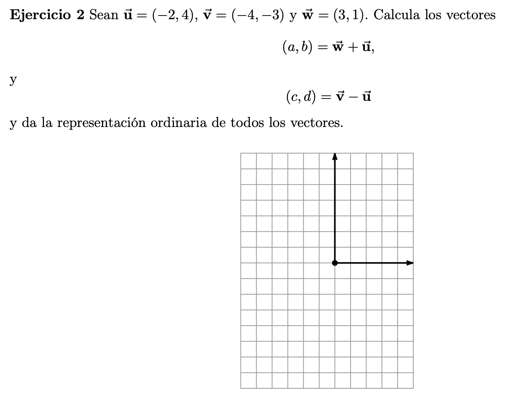
Ejercicio 2 del examen de Geometría Analítica.
La representación ordinaria de un vector \((a, b)\) es la flecha que sale del origen y llega al punto \((a, b)\). Además de plt.scatter(), necesitamos dos funciones nuevas:
Función
¿Qué hace?
plt.plot([x1, x2], [y1, y2])
Une los puntos\((x_1, y_1)\) y \((x_2, y_2)\) con un segmento de recta. Con más puntos, los une en orden.
Dibuja una flecha de xytext (el origen) a xy (la punta). El texto vacío "" hace que solo aparezca la flecha; veremos más usos en Anotaciones.
Paso 1. Las operaciones. Con arreglos de NumPy, la suma y la resta de vectores se hacen entrada por entrada, como en el pizarrón:
Código
u = np.array([-2, 4])v = np.array([-4, -3])w = np.array([3, 1])ab = w + u # (3 + (-2), 1 + 4) = (1, 5)cd = v - u # (-4 - (-2), -3 - 4) = (-2, -7)print("(a, b) = w + u =", ab)
(a, b) = w + u = [1 5]
Código
print("(c, d) = v - u =", cd)
(c, d) = v - u = [-2 -7]
Paso 2. La gráfica. Dibujamos los cinco vectores desde el origen sobre una cuadrícula como la del examen. Agregamos dos ayudas visuales:
Las líneas discontinuas moradas cierran el paralelogramo de \(\mathbf{w} + \mathbf{u}\).
La flecha punteada roja va de la punta de \(\mathbf{u}\) a la punta de \(\mathbf{v}\): es el mismo vector \(\mathbf{v} - \mathbf{u}\), pero trasladado. Por eso \(\mathbf{u} + (\mathbf{v} - \mathbf{u}) = \mathbf{v}\).
Código
vectores = [u, v, w, ab, cd]nombres = ["u", "v", "w", "w + u", "v - u"]colores = ["tab:blue", "tab:orange", "tab:green", "tab:purple", "tab:red"]plt.figure(figsize=(6, 8))# Cada vector: una flecha desde el origen y su nombre con sus coordenadas# zip() recorre las tres listas en paralelo, como en "Varios puntos"for vec, nombre, color inzip(vectores, nombres, colores): plt.annotate("", xy=vec, xytext=(0, 0), arrowprops=dict(arrowstyle="->", color=color, linewidth=2)) plt.text(vec[0] +0.2, vec[1] +0.2, nombre +" = ("+str(vec[0]) +", "+str(vec[1]) +")", color=color)# Paralelogramo de w + u: plt.plot() une dos puntos con un segmento; "--" lo hace discontinuoplt.plot([w[0], ab[0]], [w[1], ab[1]], "--", color="tab:purple", linewidth=1)plt.plot([u[0], ab[0]], [u[1], ab[1]], "--", color="tab:purple", linewidth=1)# v - u trasladado: de la punta de u a la punta de vplt.annotate("", xy=v, xytext=u, arrowprops=dict(arrowstyle="->", color="tab:red", linestyle=":", linewidth=1.5))# Cuadrícula como la del examen: de -6 a 5 en x y de -8 a 7 en yplt.axhline(0, color="black", linewidth=1)plt.axvline(0, color="black", linewidth=1)plt.xticks(range(-6, 6))plt.yticks(range(-8, 8))plt.xlim(-6, 5)plt.ylim(-8, 7)plt.gca().set_aspect("equal") # Misma escala en x y y, como en papel cuadriculadoplt.grid(True, color="lightgray")plt.title("Ejercicio 2: representación ordinaria de los vectores")plt.show()
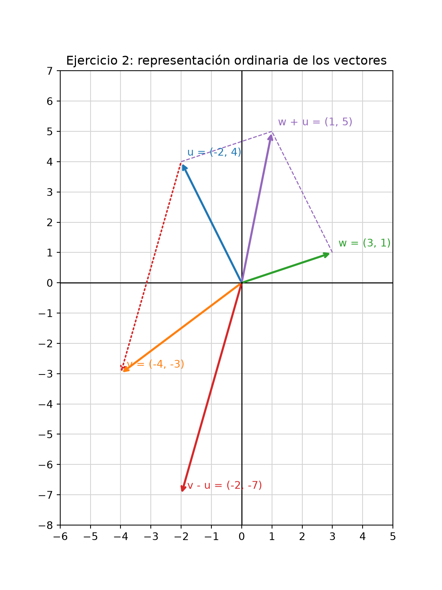
Tip
Usa Python para comprobar lo que resolviste a mano, no para reemplazarlo: si tu flecha en papel no coincide con la de la gráfica, revisa los signos de la resta.
65.3.4 De puntos a la gráfica de una función
La gráfica de una función \(f(x)\) es el conjunto de puntos \((x, f(x))\). Si calculamos pocos puntos de \(f(x) = x^2\) y los unimos, la curva se ve “quebrada”; con muchos puntos (usando np.linspace()) se ve suave:
Código
x_pocos = np.array([-2, -1, 0, 1, 2])x_muchos = np.linspace(-2, 2, 100) # 100 puntos entre -2 y 2plt.figure(figsize=(6, 4))plt.plot(x_muchos, x_muchos**2, color="tab:gray", label="100 puntos")plt.plot(x_pocos, x_pocos**2, marker="o", color="tab:red", label="5 puntos")plt.xlabel("x")plt.ylabel("y")plt.title("$f(x) = x^2$ a partir de sus puntos")plt.legend()plt.grid(True)plt.show()
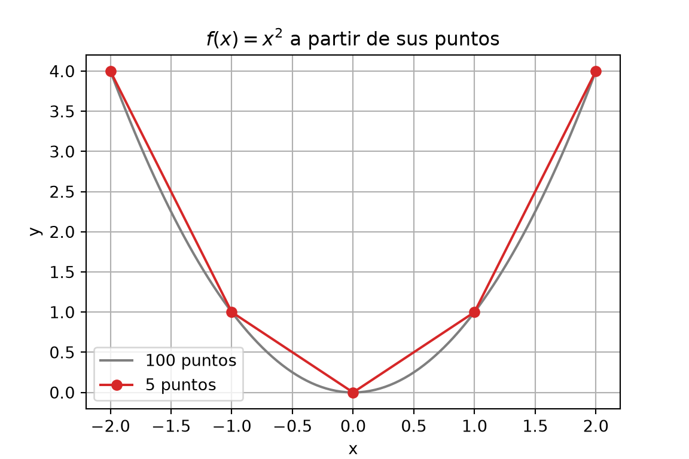
Esta es la idea detrás de todas las gráficas de las siguientes secciones. Más adelante, en Un plano cartesiano para geometría analítica, prepararemos un plano cartesiano “matemático” más completo: ejes centrados en el origen y la misma escala en \(x\) y \(y\).
65.4 Graficar funciones con Matplotlib
Con las partes de una gráfica y la idea de “muchos puntos unidos” ya podemos graficar funciones. Este ejemplo usa el estilo plt y las funciones de la tabla de partes de una gráfica:
Código
x = np.linspace(-3, 3, 100) # 100 puntos entre -3 y 3plt.figure(figsize=(6, 4)) # Tamaño de la figura en pulgadasplt.plot(x, x**2, label="$f(x) = x^2$")plt.plot(x, -x**2+5, label="$g(x) = -x^2 + 5$", linestyle="--")plt.xlabel("x")plt.ylabel("y")plt.title("Dos parábolas")plt.legend()plt.grid(True)plt.show()
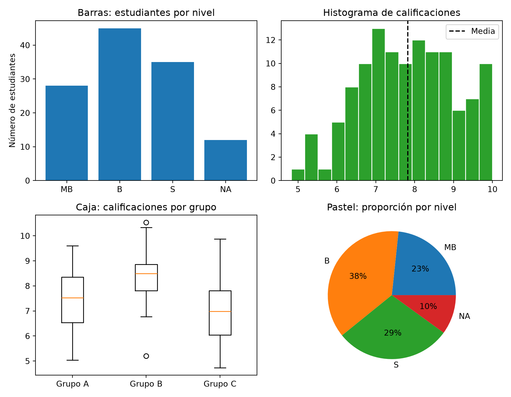
Los textos entre signos de dólar, como "$f(x) = x^2$", se escriben en LaTeX, igual que en Markdown.
x = np.linspace(0, 2* np.pi, 200)plt.figure(figsize=(6, 4))plt.plot(x, np.sin(x), label="sen(x)")plt.plot(x, np.cos(x), label="cos(x)")plt.fill_between(x, np.sin(x), np.cos(x), alpha=0.3)plt.legend()plt.title("Área entre sen(x) y cos(x)")plt.show()
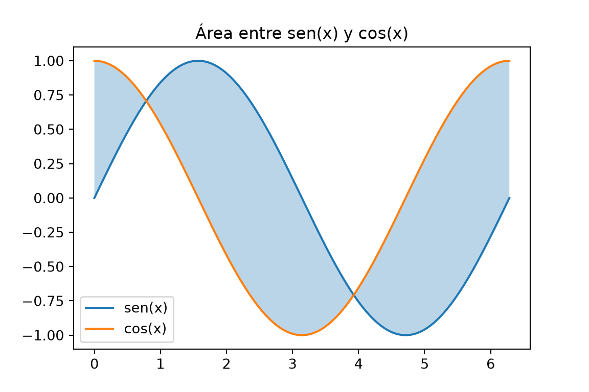
65.5 Tipos de gráficas
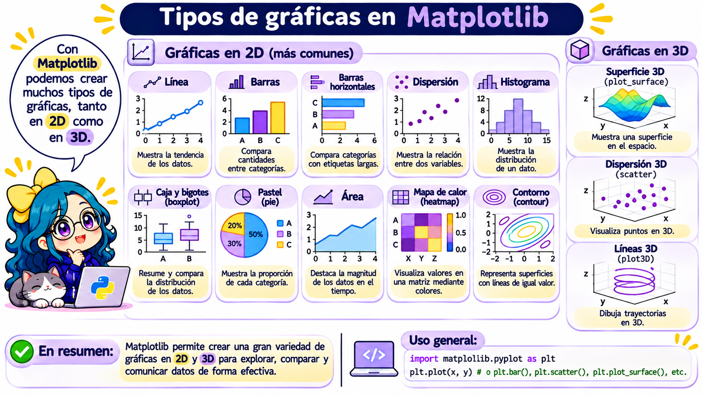
Gráfica
¿Para qué sirve?
Matplotlib
Plotly
Gráficas en 2D
Línea
Funciones, tendencias en el tiempo.
plt.plot()
px.line()
Barras
Comparar cantidades entre categorías.
plt.bar()
px.bar()
Barras horizontales
Comparar categorías con etiquetas largas.
plt.barh()
px.bar(..., orientation="h")
Dispersión
Relación entre dos variables.
plt.scatter()
px.scatter()
Histograma
Distribución de una variable.
plt.hist()
px.histogram()
Caja y bigotes (boxplot)
Mediana, cuartiles y valores atípicos; comparar distribuciones.
plt.boxplot()
px.box()
Pastel (pie)
Proporciones de un total (pocas categorías).
plt.pie()
px.pie()
Área
Destacar la magnitud acumulada bajo una curva.
plt.fill_between()
px.area()
Mapa de calor (heatmap)
Valores de una matriz representados con colores.
plt.imshow()
px.imshow()
Contorno o curvas de nivel (contour)
Funciones de dos variables \(f(x, y)\): líneas donde \(f\) tiene el mismo valor.
plt.contour(), plt.contourf() (relleno)
go.Contour()
Gráficas en 3D
Superficie 3D
Funciones \(z = f(x, y)\).
ax.plot_surface()
go.Surface()
Dispersión 3D
Puntos \((x, y, z)\) en el espacio.
ax.scatter(x, y, z)
px.scatter_3d()
Líneas 3D
Trayectorias y curvas en el espacio, como una hélice.
ax.plot(x, y, z)
px.line_3d()
Las gráficas en 3D de Matplotlib se dibujan sobre ejes 3D, ax = plt.figure().add_subplot(projection="3d"), por eso se escriben con ax. y no con plt.. Las veremos en Visualización III: gráficas en 3D.
65.5.1 ¿Qué gráfica elegir para explicar algo?
Una gráfica es una respuesta visual a una pregunta. Antes de escribir código, pregúntate: ¿qué quiero que el lector vea? La pregunta decide la gráfica:
Quiero mostrar…
Pregunta que responde
Mejor opción
Ejemplo matemático
Evita
Cambio o tendencia de una variable continua
¿Cómo cambia \(y\) cuando \(x\) crece?
Línea
La gráfica de \(f(x) = \sin x\); una sucesión que converge.
Barras: sugieren categorías separadas.
Relación entre dos variables numéricas
¿Están relacionadas \(x\) y \(y\)? ¿Hay un patrón?
Dispersión
Puntos \((x, y)\) aleatorios; \(n\) contra el número de divisores de \(n\).
Unir los puntos con líneas si el orden no importa.
Comparar cantidades entre categorías
¿Cuál es mayor? ¿Por cuánto?
Barras
Cuántos primos terminan en 1, 3, 7 y 9.
Pastel con muchas categorías.
Distribución de una variable
¿Qué valores son más frecuentes? ¿Es simétrica?
Histograma
Los resultados de lanzar dos dados 1000 veces.
Barras de cada valor individual si hay muchos.
Comparar distribuciones entre grupos
¿Qué grupo tiene mayor mediana o más dispersión? ¿Hay valores atípicos?
Caja (boxplot)
Calificaciones de tres grupos.
Solo mostrar los promedios.
Partes de un todo
¿Qué fracción del total es cada parte?
Pastel (máximo 4 o 5 partes) o barras
Proporción de pares e impares.
Pastel con partes de tamaño parecido.
Una función de dos variables
¿Dónde están los máximos, mínimos y puntos silla?
Curvas de nivel o mapa de calor
\(f(x, y) = x^2 - y^2\).
3D si una vista 2D basta.
La forma de una superficie
¿Cómo se ve \(z = f(x, y)\)?
Superficie 3D (mejor interactiva, con Plotly)
Un paraboloide.
3D estática si oculta partes importantes.
En el siguiente capítulo veremos el mismo dato en dos gráficas: un pastel y unas barras lado a lado, para comparar cuál se lee mejor.
TipTres preguntas antes de graficar
¿Qué pregunta responde mi gráfica? Si no puedes decirla en una frase, la gráfica no será clara.
¿Qué tipo de datos tengo? Categorías → barras; números continuos → línea, dispersión o histograma.
¿Se entiende sin leer el código? Título, ejes con etiquetas (y unidades) y leyenda. Revisa también las buenas prácticas de visualización.
65.5.2 Dispersión con mapa de colores
Código
# Paso 1: generar 300 puntos aleatorios (x, y)rng = np.random.default_rng(seed=2026) # Generador con semilla: siempre los mismos númerospuntos_x = rng.normal(size=300) # 300 coordenadas x (distribución normal)puntos_y = rng.normal(size=300) # 300 coordenadas y# Paso 2: calcular el ángulo de cada punto respecto al eje x (entre -π y π)angulo = np.arctan2(puntos_y, puntos_x)# Paso 3: dibujar los puntos, coloreados según su ánguloplt.figure(figsize=(5, 4))plt.scatter(puntos_x, puntos_y, c=angulo, # c: el valor que decide el color de cada punto cmap="viridis", # cmap: la paleta de colores alpha=0.8) # alpha: un poco transparentes para ver los encimados# Paso 4: agregar la barra de colores, el título y la misma escala en ambos ejesplt.colorbar(label="Ángulo (radianes)") # Explica qué valor representa cada colorplt.title("Puntos aleatorios coloreados por su ángulo")plt.axis("equal") # Una unidad en x mide lo mismo que en yplt.show()
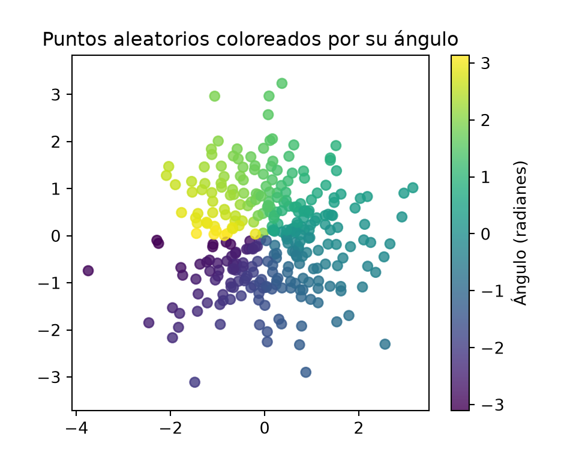
65.5.3 Datos para los ejemplos
Para las siguientes gráficas usaremos calificaciones simuladas con números aleatorios de NumPy (con semilla, para obtener siempre los mismos datos):
Código
rng = np.random.default_rng(seed=2026) # Generador con semilla: siempre los mismos datos# Datos por CATEGORÍA (para barras y pastel)niveles = ["MB", "B", "S", "NA"] # Muy bien, Bien, Suficiente, No acreditadoestudiantes_por_nivel = [28, 45, 35, 12] # Cuántos estudiantes hay en cada nivel# Datos NUMÉRICOS (para histograma y caja)calificaciones = np.clip(rng.normal(7.8, 1.3, 120), 0, 10) # 120 calificaciones (media 7.8) recortadas entre 0 y 10grupo_a = rng.normal(7.5, 1.0, 40) # 40 calificaciones: media 7.5, desviación 1.0grupo_b = rng.normal(8.2, 0.8, 40) # 40 calificaciones: media 8.2, desviación 0.8grupo_c = rng.normal(6.9, 1.4, 40) # 40 calificaciones: media 6.9, desviación 1.4
rng.normal(media, desviacion, n) genera n números con distribución normal, y np.clip(datos, 0, 10) recorta los valores para que queden entre 0 y 10.
65.5.4 Gráfica de barras: plt.bar()
Una gráfica de barras compara cantidades entre categorías. Recibe las categorías (eje \(x\)) y la altura de cada barra (eje \(y\)):
Código
plt.figure(figsize=(6, 4)) # Paso 1: crear la figura (6 × 4 pulgadas)plt.bar(niveles, estudiantes_por_nivel, color="tab:blue") # Paso 2: una barra por nivel; su altura es el número de estudiantesplt.xlabel("Nivel") # Paso 3: etiquetas de los ejes y títuloplt.ylabel("Número de estudiantes")plt.title("Estudiantes por nivel")plt.show() # Paso 4: mostrar la gráfica
Para barras horizontales usa plt.barh(), útil cuando los nombres de las categorías son largos.
65.5.5 Histograma: plt.hist()
Un histograma muestra la distribución de una variable numérica: divide el rango de los datos en intervalos (bins) y cuenta cuántos datos caen en cada uno.
Código
plt.figure(figsize=(6, 4)) # Paso 1: crear la figura# Paso 2: el histograma: divide las calificaciones en 15 intervalos y cuenta cuántas caen en cada unoplt.hist(calificaciones, bins=15, color="tab:green", edgecolor="white") # Borde blanco para separar las barras# Paso 3: una línea vertical punteada en la media de las calificacionesplt.axvline(calificaciones.mean(), color="black", linestyle="--", label="Media")# Paso 4: etiquetas, título y leyenda (la leyenda usa el label de axvline)plt.xlabel("Calificación")plt.ylabel("Número de estudiantes")plt.title("Histograma de calificaciones")plt.legend()plt.show() # Paso 5: mostrar la gráfica
bins es el número de intervalos: pocos bins ocultan detalles y demasiados producen una gráfica “con ruido”.
plt.axvline(valor) dibuja una línea vertical; plt.axhline(valor), una horizontal.
Nota
No confundas un histograma con una gráfica de barras: las barras comparan categorías (MB, B, S, NA), mientras que el histograma agrupa valores numéricos en intervalos.
65.5.6 Diagrama de caja: plt.boxplot()
Un diagrama de caja (boxplot) resume una distribución con cinco valores y permite comparar varios grupos:
Código
plt.figure(figsize=(6, 4)) # Paso 1: crear la figuraplt.boxplot([grupo_a, grupo_b, grupo_c]) # Paso 2: una caja por grupo (se dibujan en x = 1, 2, 3)plt.xticks([1, 2, 3], ["Grupo A", "Grupo B", "Grupo C"]) # Paso 3: cambiar las marcas 1, 2, 3 por el nombre del grupoplt.ylabel("Calificación") # Paso 4: etiqueta y títuloplt.title("Calificaciones por grupo")plt.show() # Paso 5: mostrar la gráfica
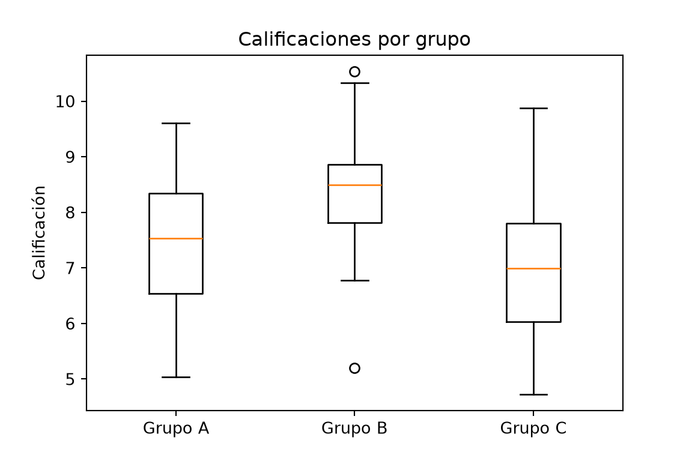
Parte de la caja
¿Qué representa?
Línea dentro de la caja
La mediana.
Borde inferior y superior de la caja
Primer y tercer cuartil (el 50 % central de los datos).
“Bigotes”
El rango de los datos sin contar valores atípicos.
Puntos aislados
Valores atípicos (muy alejados del resto).
65.5.7 Gráfica de pastel: plt.pie()
Una gráfica de pastel muestra la proporción de cada categoría respecto al total:
Código
plt.figure(figsize=(5, 5)) # Paso 1: figura cuadrada, para que el pastel sea un círculoplt.pie(estudiantes_por_nivel, # Paso 2: el tamaño de cada rebanada es proporcional a su valor labels=niveles, # nombre de cada rebanada autopct="%1.0f%%") # porcentaje dentro de cada rebanada, sin decimalesplt.title("Proporción de estudiantes por nivel") # Paso 3: títuloplt.show() # Paso 4: mostrar la gráfica
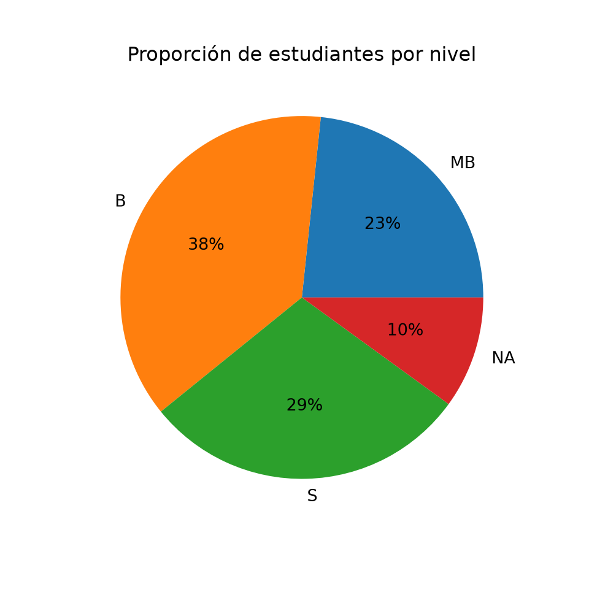
autopct="%1.0f%%" muestra el porcentaje de cada rebanada sin decimales. Úsala solo con pocas categorías; si hay muchas, una gráfica de barras se lee mejor.
Para graficar una función de dos variables, por ejemplo \(f(x, y) = \sin(x)\cos(y)\), seguimos tres pasos: crear una malla de puntos, evaluar la función en la malla y graficar el resultado.
65.6.1 Paso 1. Crear una malla con np.meshgrid()
Para graficar \(f(x)\) basta un vector de valores de \(x\). Para \(f(x, y)\) necesitamos todas las combinaciones de valores de \(x\) y de \(y\). np.meshgrid() construye esas combinaciones a partir de dos vectores. Veámoslo con pocos puntos:
Cada posición [i, j] de las matrices X y Y corresponde a un punto \((x, y)\) de la malla: por ejemplo, X[1, 2] y Y[1, 2] forman el punto \((2, 20)\).
65.6.2 Paso 2. Evaluar la función en la malla
Como X y Y son arreglos de NumPy, la función se evalúa en todos los puntos a la vez:
Código
x = np.linspace(-2* np.pi, 2* np.pi, 200)y = np.linspace(-2* np.pi, 2* np.pi, 200)X, Y = np.meshgrid(x, y)Z = np.sin(X) * np.cos(Y)print("Forma de la malla:", X.shape) # 200 × 200 = 40 000 puntos
Forma de la malla: (200, 200)
Código
print("Forma de Z:", Z.shape)
Forma de Z: (200, 200)
65.6.3 Paso 3a. Mapa de calor: plt.imshow()
Un mapa de calor pinta cada valor de Z con un color según su magnitud:
Código
plt.figure(figsize=(5, 4))plt.imshow(Z, extent=[x.min(), x.max(), y.min(), y.max()], origin="lower", cmap="RdBu")plt.colorbar(label="f(x, y)")plt.xlabel("x")plt.ylabel("y")plt.title("Mapa de calor de sen(x)·cos(y)")plt.show()
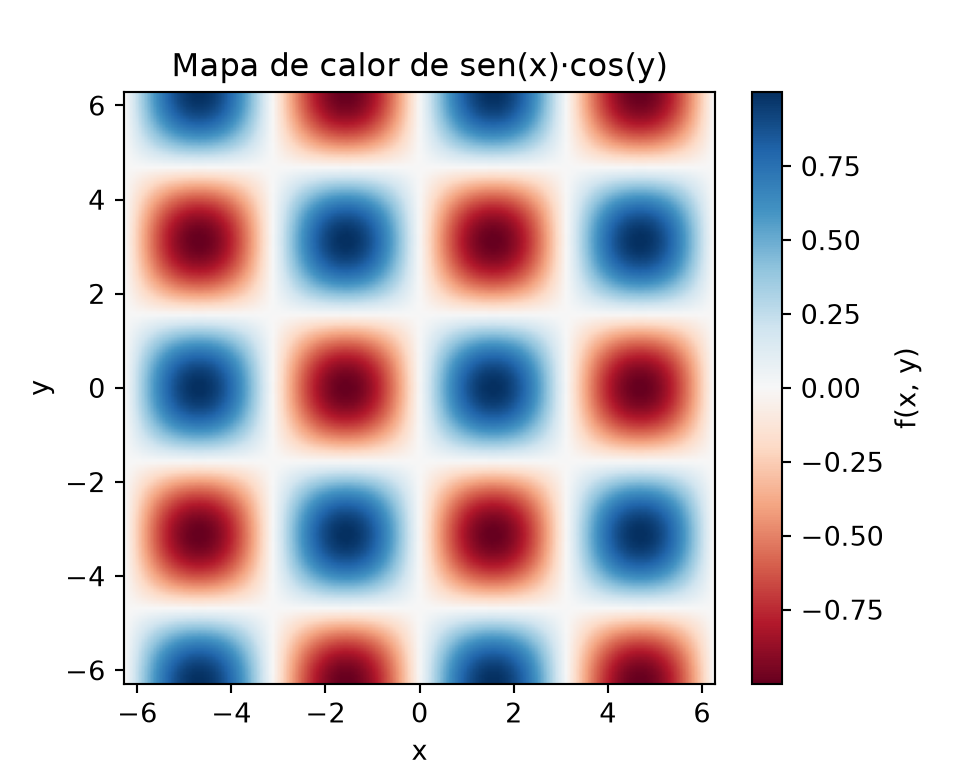
extent indica los valores de \(x\) y \(y\) en los bordes de la imagen (si no, los ejes mostrarían las posiciones de la matriz).
origin="lower" coloca la fila 0 abajo, como en un plano cartesiano.
cmap es la paleta de colores; "RdBu" va de rojo (negativos) a azul (positivos).
65.6.4 Paso 3b. Curvas de nivel: plt.contour()
Las curvas de nivel unen los puntos donde la función tiene el mismo valor, como en un mapa topográfico:
Código
plt.figure(figsize=(5, 4))curvas = plt.contour(X, Y, Z, levels=8, cmap="RdBu")plt.clabel(curvas, fontsize=7) # Escribe el valor de cada curvaplt.xlabel("x")plt.ylabel("y")plt.title("Curvas de nivel de sen(x)·cos(y)")plt.show()
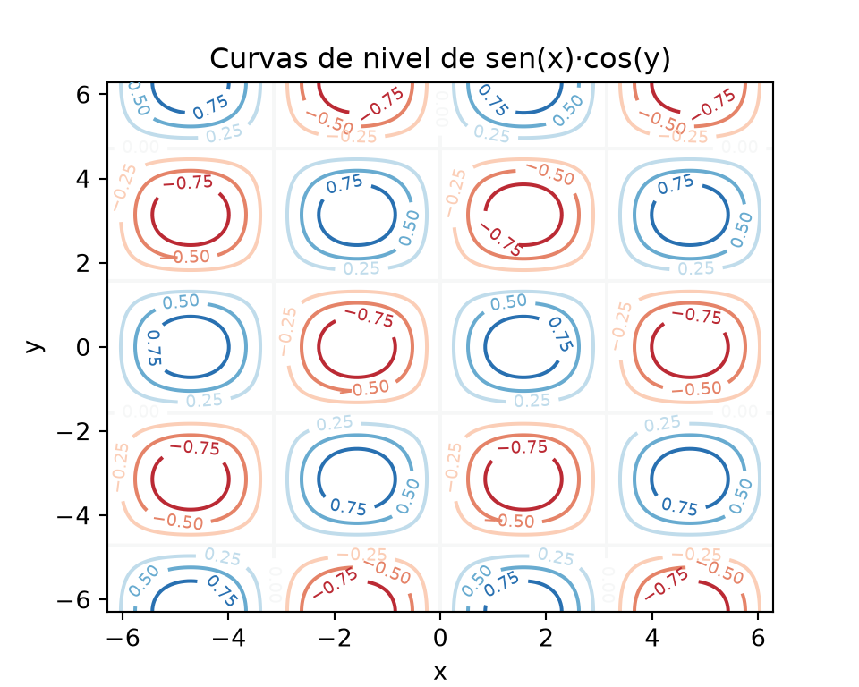
levels indica cuántas curvas dibujar. Con plt.contourf() (con f de filled) se rellenan las regiones entre curvas.
En el capítulo de SymPy vimos que sp.lambdify() convierte una expresión simbólica en una función de NumPy. Así podemos graficar una función junto con su derivada:
Observa que los máximos y mínimos de \(f\) ocurren donde la derivada vale cero.
65.8 Geometría analítica en el plano: curvas y lugares geométricos
En el curso de Geometría Analítica estudian curvas y lugares geométricos. Con lo que ya sabemos (las curvas de nivel de contour(), SymPy y las funciones de Python) podemos discutirlas y graficarlas. Los ejemplos y ejercicios están basados en la hoja Ejercicios: Curvas y Lugares Geométricos de Geometría Analítica.
65.8.1 Un plano cartesiano para geometría analítica
Las gráficas de Matplotlib tienen, por defecto, los ejes en los bordes y escalas distintas en \(x\) y en \(y\): una circunferencia se vería como una elipse. Para geometría analítica conviene centrar los ejes en el origen y usar la misma escala. Como lo haremos muchas veces, escribimos una función (capítulo de funciones). La función recibe los ejesax, así que en esta sección usamos el estilo ax con una sola gráfica: fig, ax = plt.subplots().
Código
def plano_cartesiano(ax, limite=5):"""Configura ax como un plano cartesiano: ejes en el origen, misma escala y cuadrícula.""" ax.spines["left"].set_position("zero") # Eje y en x = 0 ax.spines["bottom"].set_position("zero") # Eje x en y = 0 ax.spines["right"].set_visible(False) ax.spines["top"].set_visible(False) ax.set_xlim(-limite, limite) ax.set_ylim(-limite, limite) ax.set_aspect("equal") # Misma escala en ambos ejes ax.grid(True, alpha=0.3)return axfig, ax = plt.subplots(figsize=(5, 5))plano_cartesiano(ax)ax.set_title("Plano cartesiano")plt.show()
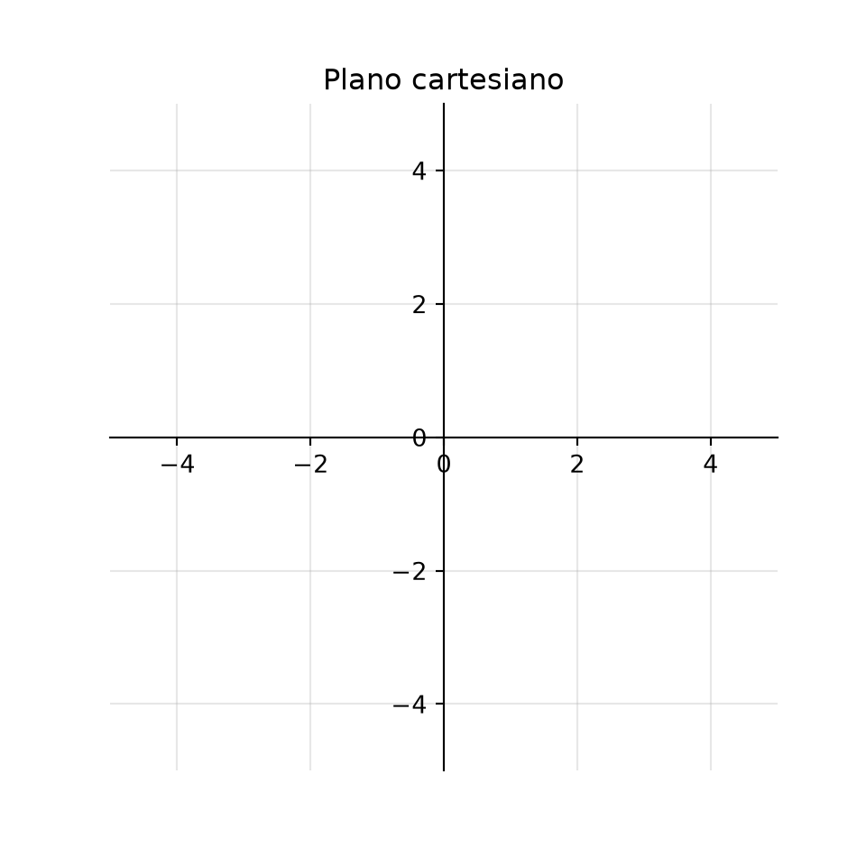
Instrucción
¿Qué hace?
ax.spines["left"].set_position("zero")
Mueve el eje vertical a \(x = 0\).
ax.spines["bottom"].set_position("zero")
Mueve el eje horizontal a \(y = 0\).
ax.spines["right"].set_visible(False)
Oculta el borde derecho (y lo mismo con "top").
ax.set_aspect("equal")
Una unidad mide lo mismo en ambos ejes.
65.8.2 Cuatro formas de describir una curva
Forma
Ejemplo (circunferencia de radio 3)
¿Cómo se grafica?
Explícita\(y = f(x)\)
\(y = \pm\sqrt{9 - x^2}\) (dos funciones)
ax.plot(x, f(x))
Implícita\(F(x, y) = 0\)
\(x^2 + y^2 - 9 = 0\)
ax.contour(X, Y, F, levels=[0])
Paramétrica\((x(t), y(t))\)
\(x = 3\cos t,\ y = 3\sin t\)
ax.plot(x(t), y(t))
Polar\(r = r(\theta)\)
\(r = 3\)
x = r cos θ, y = r sin θ
Curvas implícitas: la curva de nivel cero
Muchas curvas de geometría analítica están dadas en forma implícita, como \(x^2 + y^2 = 9\) o \(xy = 4\), y no siempre es fácil despejar \(y\). El truco es graficar la curva de nivel 0 de \(F(x, y)\), con contour() (lo vimos en funciones de dos variables):
Código
x = np.linspace(-5, 5, 400)y = np.linspace(-5, 5, 400)X, Y = np.meshgrid(x, y)fig, ax = plt.subplots(figsize=(5, 5))plano_cartesiano(ax)ax.contour(X, Y, X**2+ Y**2-9, levels=[0], colors="tab:blue") # x² + y² = 9ax.contour(X, Y, X * Y -4, levels=[0], colors="tab:red") # xy = 4ax.set_title("$x^2 + y^2 = 9$ (azul) y $xy = 4$ (rojo)")plt.show()
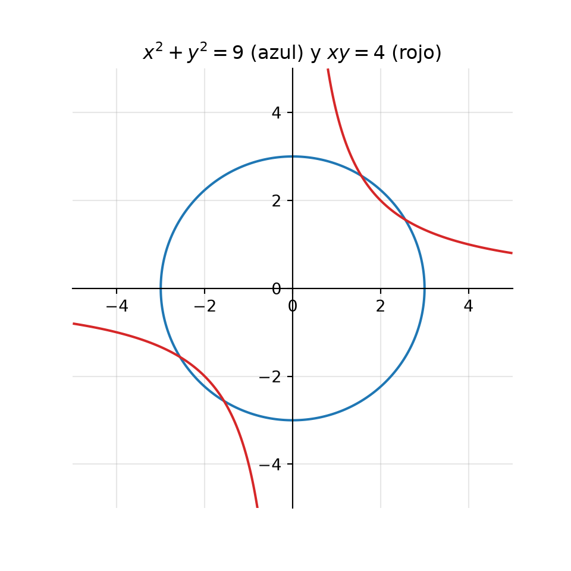
levels=[0] dibuja solo los puntos donde \(F(x, y) = 0\), es decir, la curva.
Curvas paramétricas y polares
Código
t = np.linspace(0, 2* np.pi, 400)# Paramétrica: una elipse x = 4 cos t, y = 2 sin tfig, ax = plt.subplots(figsize=(5, 5))plano_cartesiano(ax)ax.plot(4* np.cos(t), 2* np.sin(t))ax.set_title("Paramétrica: $x = 4\\cos t$, $y = 2\\sin t$")plt.show()
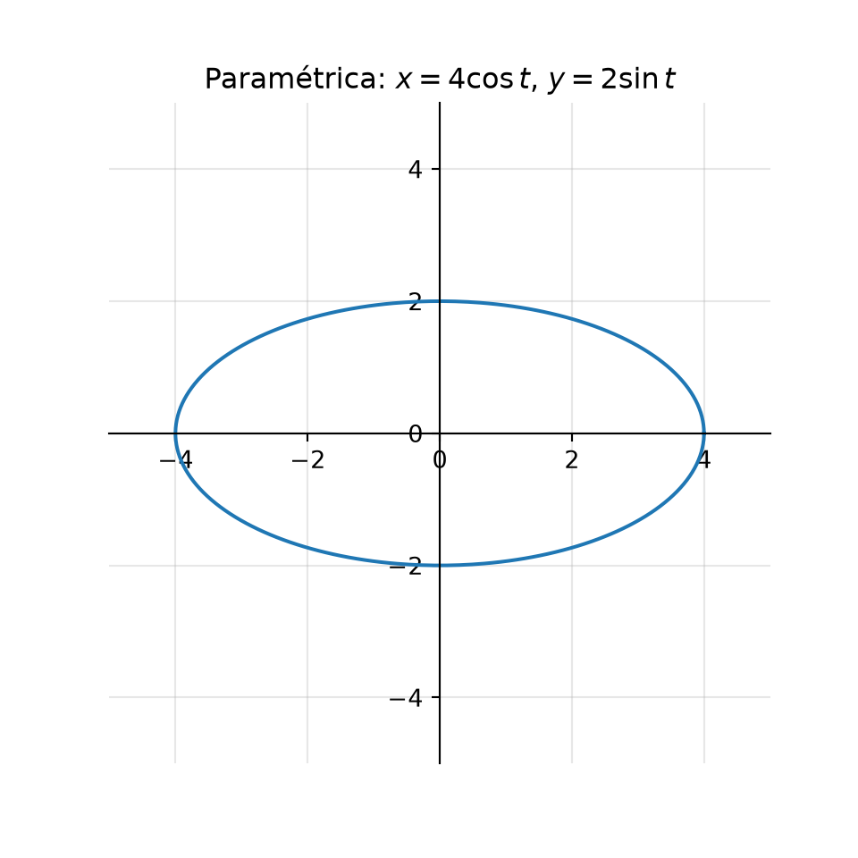
En forma polar, cada punto se calcula con \(x = r\cos\theta\) y \(y = r\sin\theta\):
Código
# Polar: una rosa de 4 pétalos r = 4 cos(2θ)r =4* np.cos(2* t)fig, ax = plt.subplots(figsize=(5, 5))plano_cartesiano(ax)ax.plot(r * np.cos(t), r * np.sin(t), color="tab:purple")ax.set_title("Polar: $r = 4\\cos(2\\theta)$")plt.show()
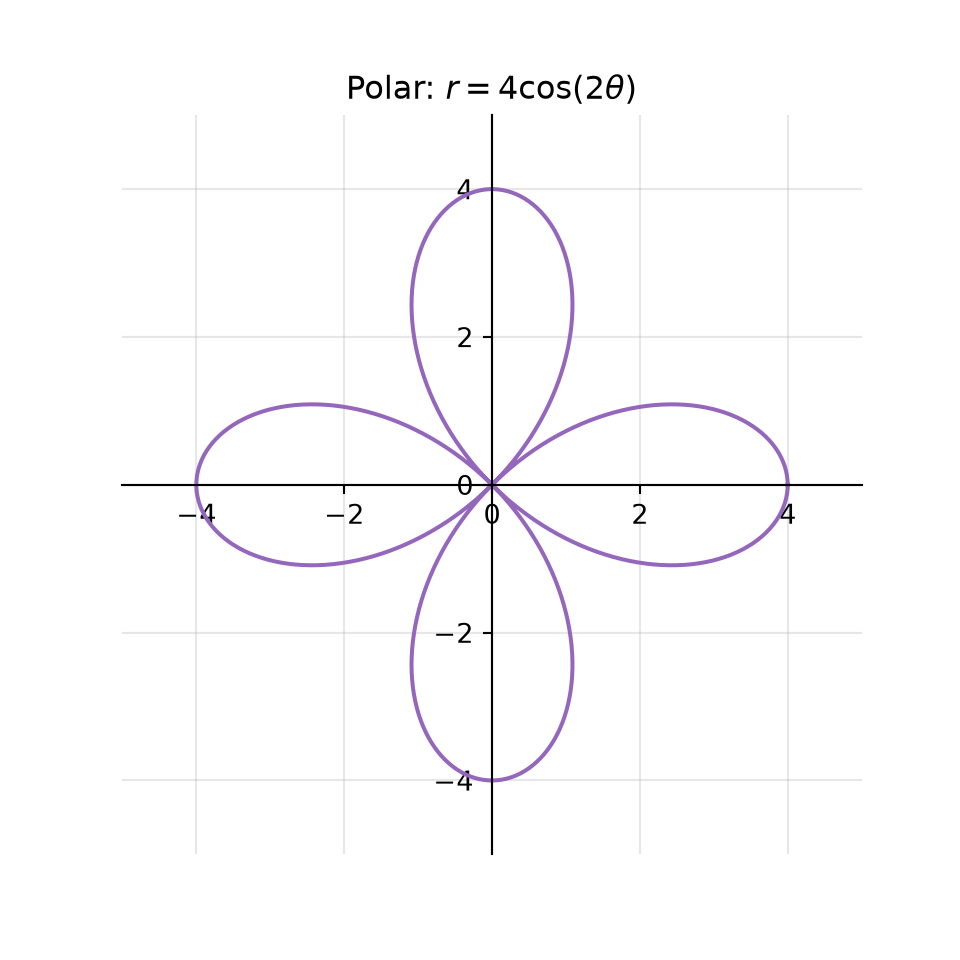
65.8.3 Discutir una curva con SymPy y Matplotlib
Discutir una curva es analizar sus intersecciones con los ejes, simetrías, extensión y asíntotas antes de bosquejarla. SymPy hace los cálculos y Matplotlib la gráfica. Tomemos el ejercicio 1a) de la hoja: \(xy - x - 2y = 0\).
Código
x, y = sp.symbols("x y", real=True)F = x*y - x -2*y
1. Intersecciones con los ejes. Con el eje \(x\) (\(y = 0\)) y con el eje \(y\) (\(x = 0\)):
Código
print("Con el eje x:", sp.solve(F.subs(y, 0), x))
Con el eje x: [0]
Código
print("Con el eje y:", sp.solve(F.subs(x, 0), y))
Con el eje y: [0]
La curva pasa por el origen.
2. Simetrías. Una curva \(F(x, y) = 0\) es simétrica respecto al eje \(x\) si al cambiar \(y\) por \(-y\) la ecuación no cambia; respecto al eje \(y\) si al cambiar \(x\) por \(-x\) no cambia; y respecto al origen si al cambiar ambos no cambia:
Código
def es_simetrica(F, sustitucion):"""Regresa True si F no cambia al aplicar la sustitución."""return sp.expand(F.subs(sustitucion, simultaneous=True) - F) ==0print("Eje x: ", es_simetrica(F, {y: -y}))
print("Límite cuando x → ∞:", sp.limit(y_despejada, x, sp.oo))
Límite cuando x → ∞: 1
Código
print("Límite cuando x → 2⁺:", sp.limit(y_despejada, x, 2, "+"))
Límite cuando x → 2⁺: oo
Como \(y = \frac{x}{x - 2}\), la curva no está definida en \(x = 2\) (asíntota vertical), y \(y \to 1\) cuando \(x \to \pm\infty\) (asíntota horizontal\(y = 1\)). Por eso la extensión es \(x \neq 2\), \(y \neq 1\).
4. La gráfica. Reunimos todo: la curva, sus asíntotas punteadas y el punto de corte con los ejes:
Código
fig, ax = plt.subplots(figsize=(6, 6))plano_cartesiano(ax, limite=6)xs = np.linspace(-6, 6, 1001) # 1001 puntos: así x = 2 no está en la mallays = xs / (xs -2)ys[np.abs(xs -2) <0.02] = np.nan # Evita una línea falsa que una las dos ramasax.plot(xs, ys, color="tab:blue", label="$xy - x - 2y = 0$")ax.axvline(2, color="gray", linestyle="--", label="Asíntota $x = 2$")ax.axhline(1, color="gray", linestyle=":", label="Asíntota $y = 1$")ax.scatter([0], [0], color="black", zorder=3, label="Corte con los ejes $(0, 0)$")ax.legend(loc="lower left", fontsize=8)plt.show()
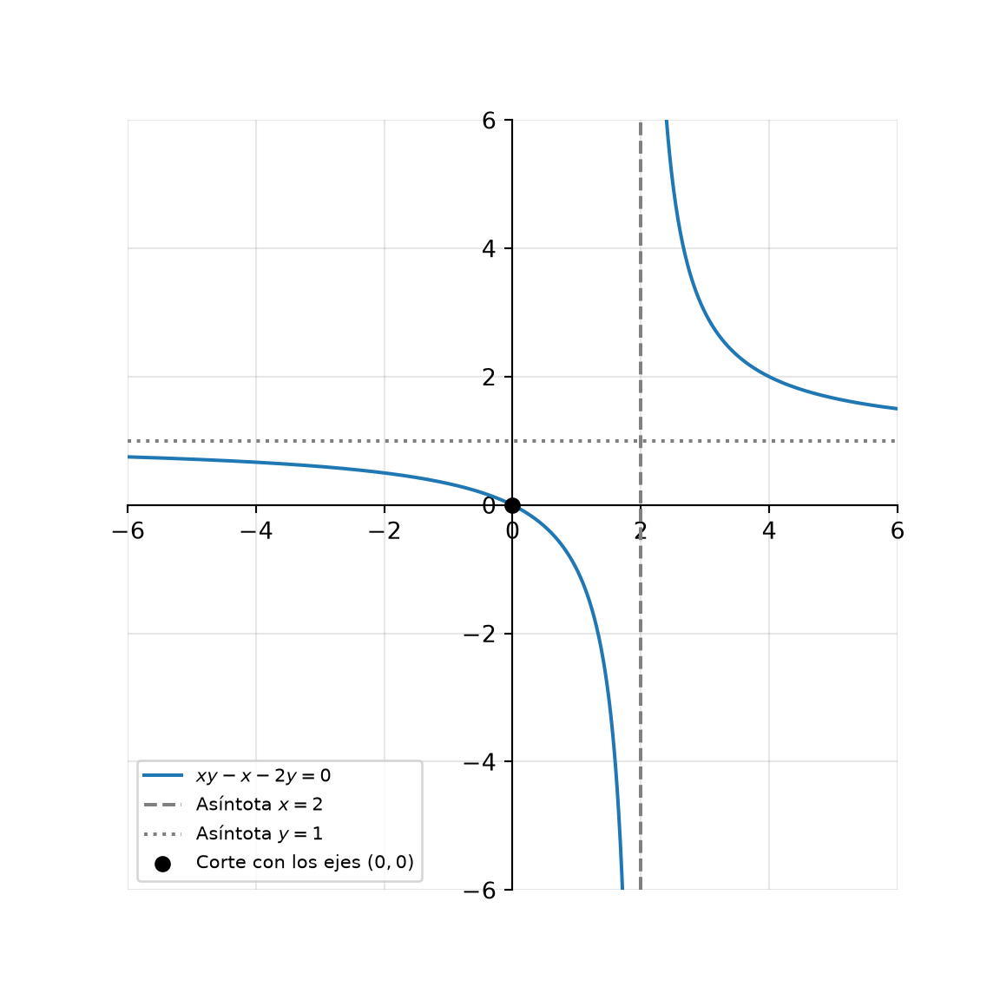
Tip
Cerca de una asíntota vertical, plt.plot() une el último punto de una rama con el primero de la otra y dibuja una línea vertical falsa. Cambiar esos valores por np.nan (“no es un número”) corta la línea.
65.8.4 Dónde existen puntos reales
En \(y^2 = x - 1\) (ejercicio 2a), \(y\) solo es real cuando \(x - 1 \geq 0\). SymPy encuentra ese conjunto con solveset(), y podemos sombrear en la gráfica la región donde existe la curva:
Código
x = sp.symbols("x", real=True)print("2a) y² = x - 1: ", sp.solveset(x -1>=0, x, sp.S.Reals))
En el ejercicio 3b), sp.solve([x**2 + y**2 - 1, y - 2], [x, y]) regresa []: la recta \(y = 2\) queda fuera de la circunferencia de radio 1 y no hay intersección.
65.8.6 Curvas que se factorizan
Si una ecuación se puede factorizar, su gráfica es la unión de las gráficas de cada factor, porque un producto es cero cuando alguno de sus factores es cero. Para el ejercicio 4a):
Código
print(sp.factor(x**2+ x*y -2*y**2))
(x - y)*(x + 2*y)
\(x^2 + xy - 2y^2 = (x - y)(x + 2y) = 0\) es la unión de las rectas \(y = x\) y \(y = -\frac{x}{2}\). Para el ejercicio 4b), \((x^2 + y^2 - 4)(y - x) = 0\) es la unión de una circunferencia de radio 2 y la recta \(y = x\):
Código
X, Y = np.meshgrid(np.linspace(-4, 4, 400), np.linspace(-4, 4, 400))fig, ax = plt.subplots(figsize=(5, 5))plano_cartesiano(ax, limite=4)ax.contour(X, Y, X**2+ X * Y -2* Y**2, levels=[0], colors="tab:blue")ax.set_title("4a) $x^2 + xy - 2y^2 = 0$")plt.show()
¡No necesitamos factorizar para graficar! contour() con levels=[0] dibuja directamente la unión de las curvas.
65.8.7 Lugares geométricos
Un lugar geométrico es el conjunto de todos los puntos \(P(x, y)\) que cumplen una condición. El método siempre es el mismo:
Escribir la condición con la fórmula de la distancia: \(d(P, A) = \sqrt{(x - x_A)^2 + (y - y_A)^2}\).
Simplificar con SymPy hasta obtener una ecuación en \(x\) y \(y\).
Graficar la ecuación junto con los puntos de la condición, para interpretarla.
Para no repetir la fórmula, la guardamos en una función. Usamos el cuadrado de la distancia, que no tiene raíz y es más fácil de simplificar:
Código
def distancia2(P, Q):"""Regresa el cuadrado de la distancia entre los puntos P y Q."""return (P[0] - Q[0])**2+ (P[1] - Q[1])**2x, y = sp.symbols("x y", real=True)P = (x, y)
Ejemplo: la mediatriz (ejercicio 5)
Los puntos que equidistan de \(A = (-2, 1)\) y \(B = (4, 3)\) cumplen \(d(P, A)^2 = d(P, B)^2\):
Código
A, B = (-2, 1), (4, 3)ecuacion = sp.expand(distancia2(P, A) - distancia2(P, B))print(ecuacion, "= 0")
Es la parábola\(y = \frac{x^2}{8} + 2\), con foco en \(F = (0, 4)\) y directriz el eje \(x\). Verifiquemos la propiedad con un punto cualquiera de la curva:
Código
fig, ax = plt.subplots(figsize=(6, 5))plano_cartesiano(ax, limite=8)ax.set_ylim(-1, 9)xs = np.linspace(-8, 8, 200)ax.plot(xs, xs**2/8+2, label="$y = x^2/8 + 2$")ax.scatter(*F_, color="tab:red", zorder=3, label="Foco $F = (0, 4)$")ax.axhline(0, color="tab:green", linewidth=2, label="Directriz: eje $x$")px0 =4py0 = px0**2/8+2# Un punto de la parábola: (4, 4)ax.plot([px0, F_[0]], [py0, F_[1]], "r--") # Distancia al focoax.plot([px0, px0], [py0, 0], "g--") # Distancia a la directrizax.scatter([px0], [py0], color="black", zorder=3)ax.legend(loc="upper left", fontsize=8)ax.set_title(f"En P = ({px0}, {py0:.0f}): distancia al foco = distancia al eje x = {py0:.0f}")plt.show()
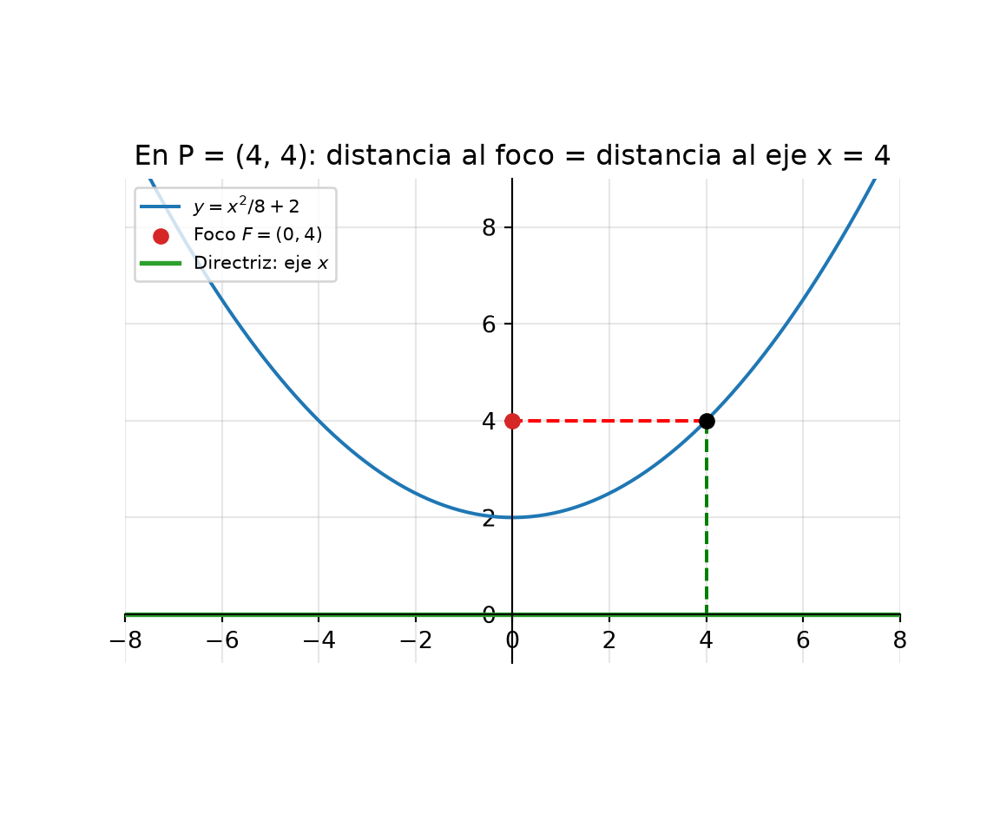
65.9 Del álgebra lineal a la gráfica
En el capítulo de álgebra lineal resolvimos sistemas de ecuaciones y operamos vectores solo con números. Con Matplotlib podemos ver lo que calculamos.
65.9.1 Un sistema de ecuaciones es un cruce de rectas
Cada ecuación del sistema
\[\begin{cases}
2x + y = 5 \\
x + 3y = 10
\end{cases}\]
es una recta. Despejando \(y\) en cada una podemos graficarlas, y la solución que da np.linalg.solve() debe ser el punto donde se cruzan:
Código
A = np.array([[2, 1], [1, 3]])b = np.array([5, 10])sol = np.linalg.solve(A, b) # [1. 3.]x = np.linspace(-1, 4, 100)y1 =5-2* x # 2x + y = 5 -> y = 5 - 2xy2 = (10- x) /3# x + 3y = 10 -> y = (10 - x) / 3plt.figure(figsize=(6, 4))plt.plot(x, y1, label="$2x + y = 5$")plt.plot(x, y2, label="$x + 3y = 10$", linestyle="--")plt.scatter(sol[0], sol[1], color="black", zorder=3)plt.annotate(f"Solución ({sol[0]:.0f}, {sol[1]:.0f})", xy=sol, xytext=(1.8, 4.5), arrowprops=dict(arrowstyle="->"))plt.axhline(0, color="black", linewidth=0.8)plt.axvline(0, color="black", linewidth=0.8)plt.xlabel("x")plt.ylabel("y")plt.title("Un sistema de ecuaciones es un cruce de rectas")plt.legend()plt.grid(True)plt.show()
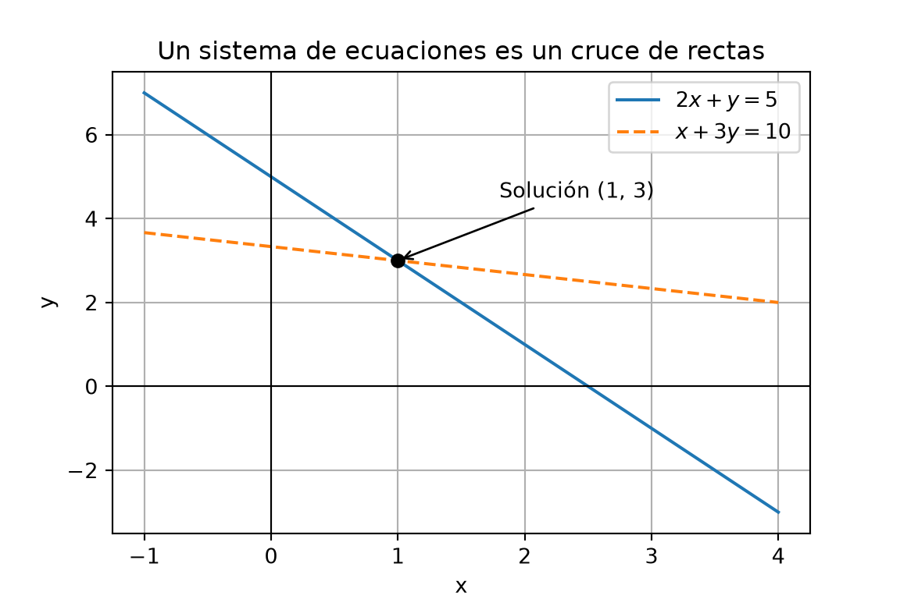
Si \(\det(A) = 0\), las rectas son paralelas (o la misma recta): no se cruzan en un solo punto, y por eso np.linalg.solve() da error.
65.9.2 Vectores como flechas
Un vector \((a, b)\) se dibuja como una flecha que sale del origen y llega al punto \((a, b)\). Con plt.annotate() sin texto obtenemos solo la flecha, como en el ejercicio de Geometría Analítica. La suma \(\mathbf{u} + \mathbf{v}\) es la diagonal del paralelogramo que forman \(\mathbf{u}\) y \(\mathbf{v}\):
Código
u = np.array([3, 1])v = np.array([1, 2])plt.figure(figsize=(5, 5))for vec, nombre, color in [(u, "u", "tab:blue"), (v, "v", "tab:orange"), (u + v, "u + v", "tab:green")]: plt.annotate("", xy=vec, xytext=(0, 0), arrowprops=dict(arrowstyle="->", color=color, linewidth=2)) plt.text(vec[0] +0.1, vec[1] +0.1, nombre, color=color)# Lados que cierran el paralelogramoplt.plot([u[0], (u + v)[0]], [u[1], (u + v)[1]], ":", color="gray")plt.plot([v[0], (u + v)[0]], [v[1], (u + v)[1]], ":", color="gray")plt.xlim(-0.5, 5)plt.ylim(-0.5, 5)plt.gca().set_aspect("equal") # Misma escala en x y y: los ángulos se ven realesplt.grid(True)plt.title("Suma de vectores: regla del paralelogramo")plt.show()
Una gráfica sin etiquetas no se puede interpretar.
Usa un título que diga qué muestra la gráfica.
El lector debe entenderla sin leer el código.
Elige el tipo de gráfica según la pregunta.
Comparar → barras; distribución → histograma; relación → dispersión.
Evita las gráficas de pastel con muchas categorías.
Es difícil comparar ángulos; mejor usa barras.
Inicia los ejes de las barras en cero.
Si no, las diferencias parecen mayores de lo que son.
Usa paletas aptas para daltonismo, como viridis.
Aproximadamente 1 de cada 12 hombres tiene alguna forma de daltonismo.
No sobrecargues la gráfica.
Demasiadas líneas o colores ocultan el mensaje principal.
65.11 Ejercicios
Resuelve los ejercicios en los editores interactivos. Recuerda que lo que escribas no se guarda al recargar la página. La primera vez que ejecutes un editor, las bibliotecas pueden tardar unos segundos en cargar.
Cuando el resultado es solo una gráfica no hay revisión automática: compara tu gráfica con la de la solución. Los ejercicios que dejan un valor en la última línea sí se revisan. Los editores de geometría analítica incluyen las funciones plano_cartesiano(), es_simetrica() o distancia2() que necesitan.
65.11.1 Ejercicio 1. Dos parábolas y sus intersecciones
Grafica \(f(x) = x^2\) y \(g(x) = -x^2 + 5\) en el intervalo \([-3, 3]\), con leyenda, etiquetas y cuadrícula.
Las parábolas se cortan donde \(x^2 = -x^2 + 5\), es decir, en \(x = \pm\sqrt{5/2}\). Marca esos dos puntos con plt.scatter().
NotaPista
Las funciones son x**2 y -x**2 + 5. Los puntos de intersección tienen coordenadas xi y xi**2.
65.11.2 Ejercicio 2. Visualizar la convergencia de una serie
En el capítulo de ciclos for aproximamos \(\pi\) con la serie de Leibniz. Ahora visualiza cómo se acerca a \(\pi\):
Con NumPy, calcula los primeros 200 términos \(4 \cdot \frac{(-1)^k}{2k + 1}\).
Con np.cumsum() obtén las sumas parciales (la suma acumulada hasta cada término).
Grafica las sumas parciales contra el número de términos y agrega una línea horizontal en \(\pi\) con plt.axhline().
NotaPista
terminos = 4 * (-1.0) ** k / (2 * k + 1), sumas_parciales = np.cumsum(terminos) y la línea horizontal en np.pi.
TipSolución
import numpy as npimport matplotlib.pyplot as pltk = np.arange(200)terminos =4* (-1.0) ** k / (2* k +1)sumas_parciales = np.cumsum(terminos)plt.figure(figsize=(7, 4))plt.plot(k +1, sumas_parciales, marker=".", linewidth=0.8, label="Sumas parciales")plt.axhline(np.pi, color="red", linestyle="--", label="π")plt.ylim(2.8, 3.5)plt.xlabel("Número de términos")plt.ylabel("Aproximación")plt.title("Convergencia de la serie de Leibniz")plt.legend()plt.show()
Las sumas parciales oscilan alrededor de \(\pi\): quedan por arriba cuando el último término es positivo y por debajo cuando es negativo, y cada vez se acercan más. Extra: cuando conozcas Plotly, haz la misma gráfica con px.line() para poder hacer zoom en las primeras sumas.
65.11.3 Ejercicio 3. Histograma de una distribución normal
Genera 1000 números aleatorios con distribución normal de media 170 y desviación estándar 8 (estaturas en centímetros), con la semilla 2026.
Haz un histograma con 30 barras.
Agrega una línea vertical en la media con plt.axvline().
NotaPista
rng.normal(170, 8, size=1000). La media se calcula con estaturas.mean().
TipSolución
import numpy as npimport matplotlib.pyplot as pltrng = np.random.default_rng(seed=2026)estaturas = rng.normal(170, 8, size=1000)plt.hist(estaturas, bins=30, color="tab:blue", edgecolor="white")plt.axvline(estaturas.mean(), color="red", linestyle="--", label="Media")plt.xlabel("Estatura (cm)")plt.ylabel("Frecuencia")plt.title("Distribución de estaturas simuladas")plt.legend()plt.show()
65.11.4 Ejercicio 4. Curvas de nivel
Grafica las curvas de nivel del paraboloide \(f(x, y) = x^2 + y^2\) en \([-3, 3] \times [-3, 3]\). ¿Qué forma tienen las curvas? ¿Por qué?
NotaPista
X, Y = np.meshgrid(x, y) y Z = X**2 + Y**2.
TipSolución
import numpy as npimport matplotlib.pyplot as pltx = np.linspace(-3, 3, 100)y = np.linspace(-3, 3, 100)X, Y = np.meshgrid(x, y)Z = X**2+ Y**2curvas = plt.contour(X, Y, Z, levels=10, cmap="viridis")plt.clabel(curvas, fontsize=8)plt.axis("equal")plt.title("Curvas de nivel de f(x, y) = x² + y²")plt.show()
Las curvas son circunferencias centradas en el origen: \(x^2 + y^2 = c\) es la ecuación de una circunferencia de radio \(\sqrt{c}\).
Usa la función es_simetrica() para averiguar si \(xy = 4\) es simétrica respecto al eje \(x\), al eje \(y\), al origen y a la recta \(y = x\) (sustitución {x: y, y: x}).
Grafica la curva con contour() y sus asíntotas (los ejes).
En la última línea deja la tupla (eje_x, eje_y, origen, recta_y_x) con tus cuatro resultados.
NotaPista
Las sustituciones son diccionarios: {y: -y}, {x: -x}, {x: -x, y: -y} y {x: y, y: x}. Para la gráfica, la función en la malla es X * Y - 4.
Las asíntotas son los propios ejes: cuando \(x \to \infty\), \(y = 4/x \to 0\).
65.11.6 Ejercicio 6. Intersección de una circunferencia y una recta
Encuentra con SymPy las intersecciones de la circunferencia \(x^2 + y^2 = 25\) y la recta \(x + y = 7\). Grafica ambas curvas y marca los puntos. Deja la lista de puntos en la última línea.
NotaPista
sp.solve() supone que cada expresión está igualada a cero: escribe x**2 + y**2 - 25 y x + y - 7.
TipSolución
puntos = sp.solve([x**2+ y**2-25, x + y -7], [x, y])print(puntos) # [(3, 4), (4, 3)]
65.11.7 Ejercicio 7. Lugar geométrico: equidistancia (ejercicio 7)
Obtén la ecuación del lugar geométrico de los puntos \(P(x, y)\) que equidistan de \(A(1, -2)\) y \(B(5, 4)\). Grafícalo junto con los puntos \(A\) y \(B\). Deja la ecuación simplificada (la expresión igualada a cero) en la última línea.
NotaPista
La condición \(d(P, A) = d(P, B)\) es equivalente a \(d(P, A)^2 - d(P, B)^2 = 0\): escribe distancia2(P, A) - distancia2(P, B).
Es la recta \(2x + 3y - 9 = 0\), la mediatriz del segmento \(AB\), igual que en el ejemplo del ejercicio 5.
65.11.8 Ejercicio 8. Lugar geométrico: una circunferencia escondida (ejercicio 8)
El cuadrado de la distancia de \(P(x, y)\) a \(A(4, 1)\) es igual a su distancia al eje \(Y\), que es \(|x|\). Para los puntos con \(x \geq 0\), la condición es \(d(P, A)^2 = x\).
Obtén la ecuación con SymPy.
Encuentra el centro de la curva: el punto donde las derivadas de la ecuación respecto a \(x\) y a \(y\) valen cero (así se “completa el cuadrado” con cálculo).
Grafica la curva con contour().
Deja el centro como tupla (cx, cy) en la última línea.
NotaPista
El sistema es la derivada respecto a xy la derivada respecto a y: sp.diff(ecuacion, y).
La ecuación \(x^2 - 9x + y^2 - 2y + 17 = 0\) es equivalente a \(\left(x - \frac{9}{2}\right)^2 + (y - 1)^2 = \frac{17}{4}\). Todos sus puntos tienen \(x > 0\), así que el caso \(x < 0\) no aporta puntos.
65.11.9 Ejercicio 9. La elipse de los jardineros (ejercicio 9)
Los puntos cuya suma de distancias a \(A(3, 0)\) y \(B(-3, 0)\) es 8 forman una elipse con focos \(A\) y \(B\). Si clavas dos estacas en los focos, atas una cuerda de longitud 8 y la mantienes tensa con un lápiz, ¡dibujas esta elipse!
Para una elipse con centro en el origen: el semieje mayor es \(a = \frac{8}{2}\), la distancia del centro a cada foco es \(c = 3\) y el semieje menor cumple \(b^2 = a^2 - c^2\).
Calcula a, c y b.
Grafica la curva \(d(P, A) + d(P, B) = 8\) con contour() y compárala con la paramétrica \(x = a\cos t\), \(y = b\sin t\).
La ecuación es \(\frac{x^2}{16} + \frac{y^2}{7} = 1\). La curva de nivel (gruesa) y la paramétrica (punteada) coinciden.
65.11.10 Ejercicio 10. El ángulo entre dos vectores
En el capítulo de álgebra lineal calculamos que el ángulo entre \(\mathbf{a} = (1, 0)\) y \(\mathbf{b} = (1, 1)\) es de 45°. Dibuja los dos vectores como flechas y escribe el ángulo en el título. ¿Se ve de 45°? Prueba quitando plt.gca().set_aspect("equal"): ¿qué cambia?
NotaPista
\(\cos \theta = \dfrac{\mathbf{a} \cdot \mathbf{b}}{\lVert \mathbf{a} \rVert \, \lVert \mathbf{b} \rVert}\): (a @ b) / (np.linalg.norm(a) * np.linalg.norm(b)). Cada flecha llega a su vector: xy=a y xy=b.
TipSolución
import numpy as npimport matplotlib.pyplot as plta = np.array([1, 0])b = np.array([1, 1])cos_theta = (a @ b) / (np.linalg.norm(a) * np.linalg.norm(b))theta = np.rad2deg(np.arccos(cos_theta))plt.figure(figsize=(5, 5))plt.annotate("", xy=a, xytext=(0, 0), arrowprops=dict(arrowstyle="->", color="tab:blue", linewidth=2))plt.annotate("", xy=b, xytext=(0, 0), arrowprops=dict(arrowstyle="->", color="tab:orange", linewidth=2))plt.text(1.05, 0.05, "a", color="tab:blue")plt.text(1.05, 1.05, "b", color="tab:orange")plt.xlim(-0.5, 1.5)plt.ylim(-0.5, 1.5)plt.gca().set_aspect("equal")plt.grid(True)plt.title(f"Ángulo entre a y b: {theta:.0f}°")plt.show()
Sin set_aspect("equal"), una unidad en \(x\) puede medir distinto que una unidad en \(y\), y el ángulo se ve deformado aunque siga midiendo 45°.
65.12 Reto final: discute la curva completa
Discute la curva \(y^2 = x(x - 2)\) (ejercicio 2b) en un solo programa:
Intersecciones con los ejes.
Simetrías respecto al eje \(x\), al eje \(y\) y al origen.
Valores de \(x\) para los que existen puntos reales.
Su gráfica con la región de existencia sombreada.
Deja en la última línea la tupla (cortes_eje_x, simetrica_eje_x) con la lista de cortes con el eje \(x\) ordenada y si es simétrica respecto al eje \(x\).
NotaPista
Para la simetría respecto al eje \(x\): sp.expand(F.subs(y, -y) - F) == 0. La condición de existencia es que el lado derecho no sea negativo: x*(x - 2) >= 0.